Task2. Play with Chrome Developers Toolkit (DevTools), and "Network" tab.
Olx
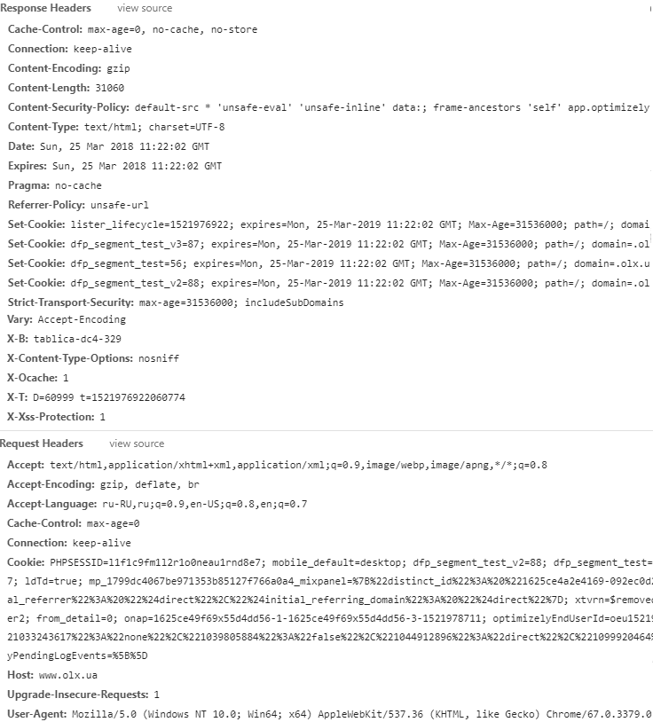
Instagram
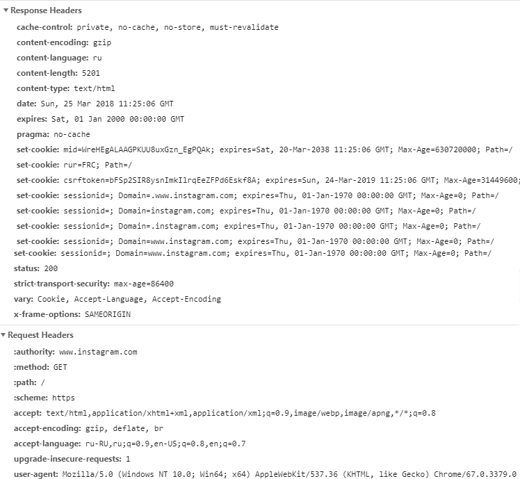
Facebook
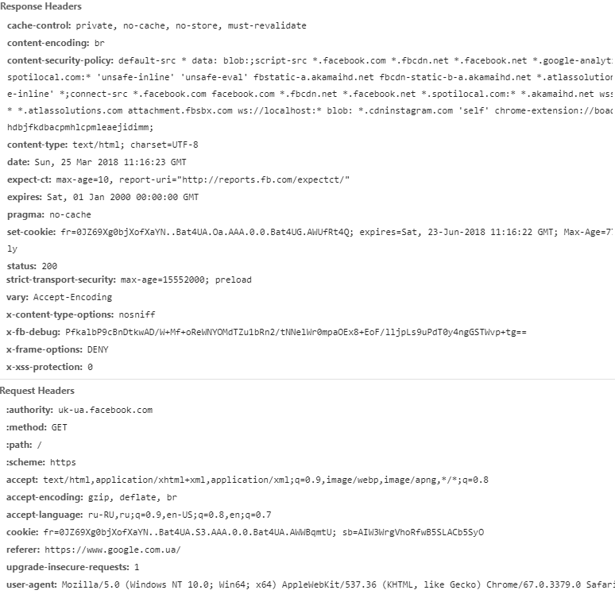
Trello
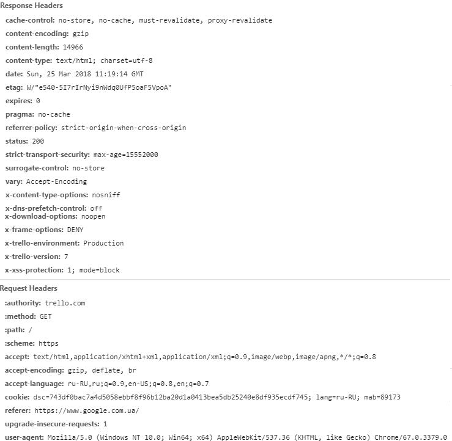
Youtobe
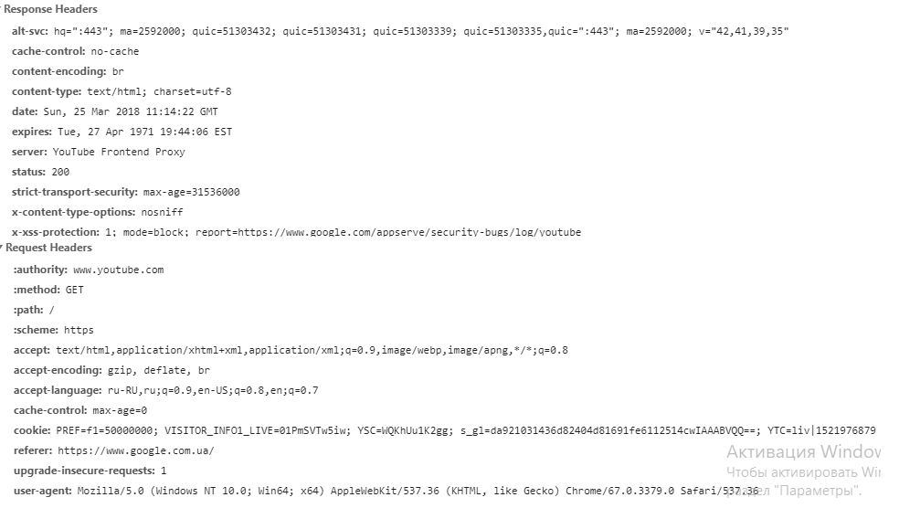
Пояснення
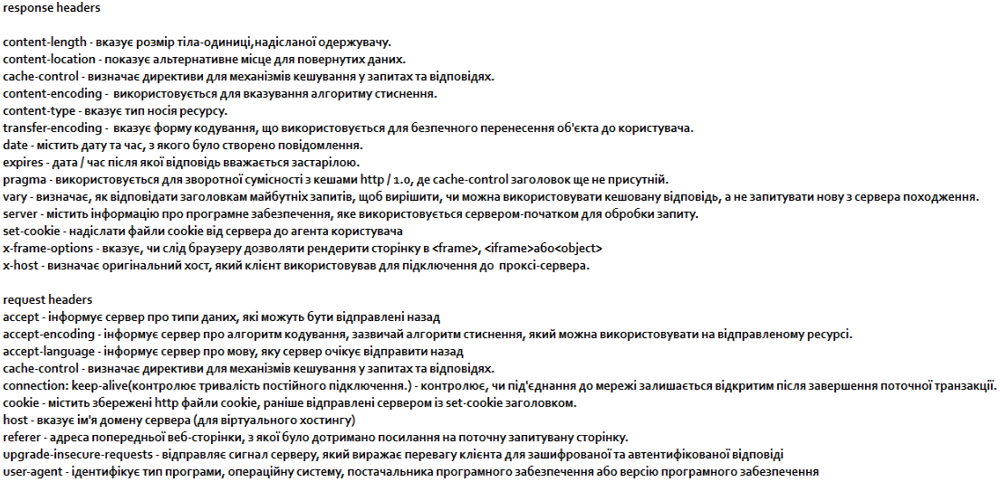
Task3. What are differences between HTTP version 1.0 and 1.1?
-
HTTP 1.0Для кожно запиту створює нове підключення, і після відповіді зв`язок розриває .
HTTP 1.1 Дозволяє відправити декілька запитів через одне з`єднання .
-
Метод GET призначений для отримання інформації від сервера. В рамках GET-запиту деякі
дані можуть бути передані в рядку запиту URI, що вказують, наприклад, умови пошуку, діапазони
дат, або іншу інформацію, яка визначає запит.
Метод POST призначений для запиту, при якому веб-сервер приймає дані, ув'язнені в тіло
повідомлення, для зберігання. Він часто використовується для завантаження файлу або подання заповненої веб-форми.
-
авторизація:Facbook
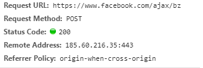
Пошук по сайту Rozetka
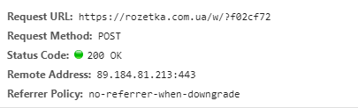
,
Task4. Use the "telnet" program.
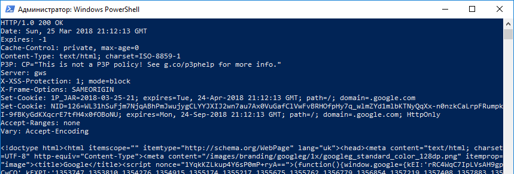
Task5. Use actions on "Network" tab.
filter - фільтр за типами. Search- дозволяє знаходити потрібнийелемент.
Дозволить в майбутньому швидко відсортувати файли за типом,розміром.Преглядати швидкість завантаження.
Task 6. Using the hurl.it
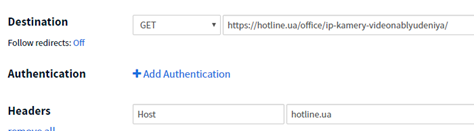
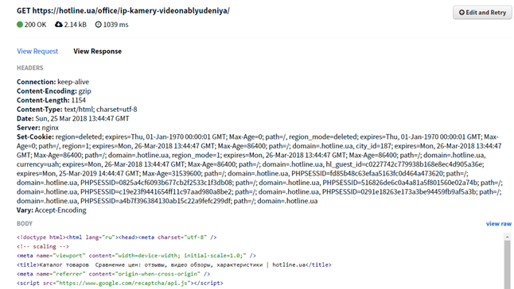
Task 7. Using the hurl.it
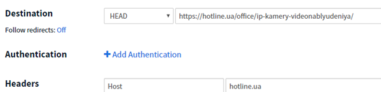
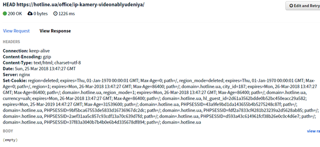
Task 8. What is the different with GET request?
При запиті Head сервер не повертає вміст документу .
\
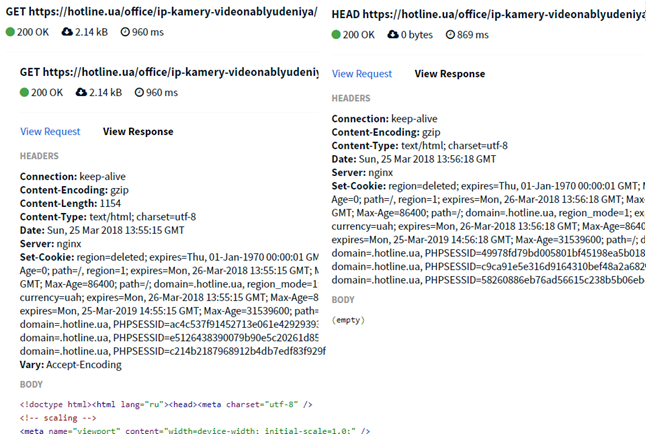>
Task 9. Find and show few (at least 5) resources, where POST method is used
- facebook.com
- youtube.com
- olx.ua
- hotline.ua
- instagram.com
POST використовується для авторизації.
Task 10. Using the Postman extension
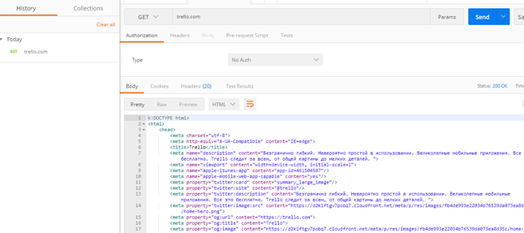
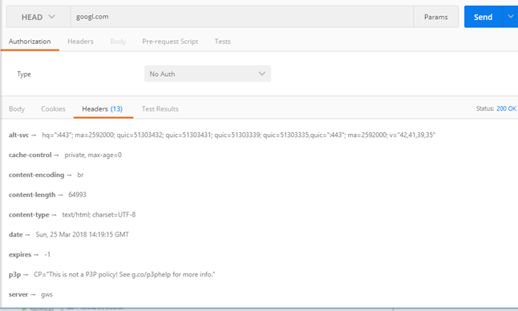
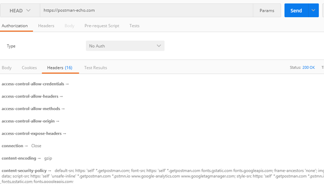
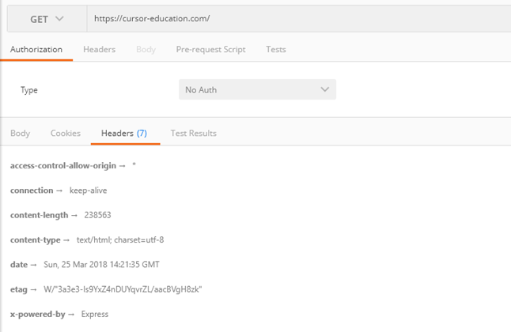
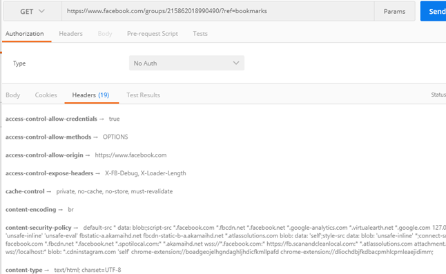
Task 11. Find any free hosting that provides FTP accessgoogle "ftp free hosting", or "free hosting", etc
http://olfree.kl.com.ua/